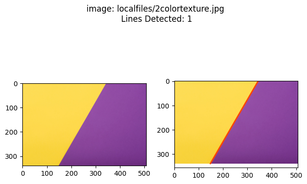
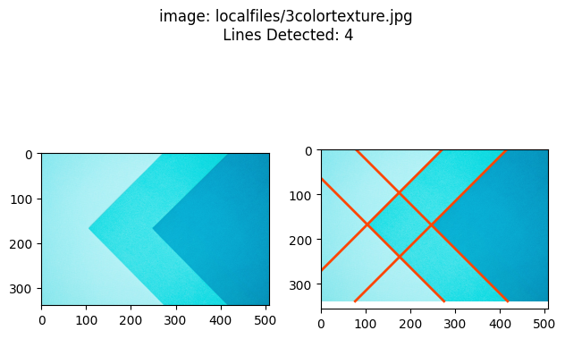
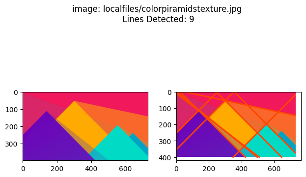
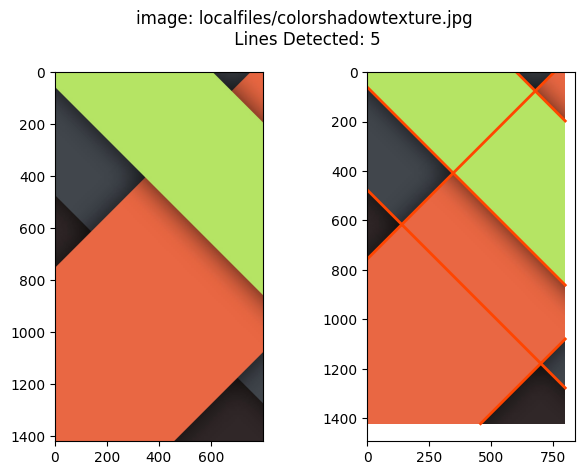
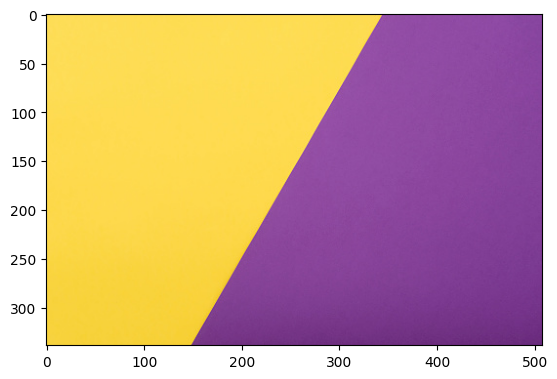
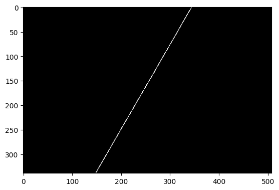

Edge detection
Overview of possible algorithms to detect sharp edges in pixel images.
from context import segmentationtools
import cv2
import math
import numpy as np
import segmentationtools as st
from matplotlib import pyplot as plt
Jupyter environment detected. Enabling Open3D WebVisualizer.
[Open3D INFO] WebRTC GUI backend enabled.
[Open3D INFO] WebRTCWindowSystem: HTTP handshake server disabled.
Complete function
st.show_detected_lines("localfiles/2colortexture.jpg")
st.show_detected_lines("localfiles/3colortexture.jpg")
st.show_detected_lines("localfiles/colorpiramidstexture.jpg")
st.show_detected_lines("localfiles/colorshadowtexture.jpg")




Image Import
# Import sourse image
img = cv2.imread("localfiles/2colortexture.jpg")
st.show_img(img, True)

Canny Edge Detection
# perform Canny edge tedection to find sharp gradients
dst = cv2.Canny(img, 100, 300, None, 3)
dstp = cv2.cvtColor(dst, cv2.COLOR_GRAY2BGR)
st.show_img(dstp)

HoughLines
# Lets apply Standard HoughLine transform to detect lines
dstp2 = cv2.cvtColor(dst, cv2.COLOR_GRAY2BGR)
lines = cv2.HoughLines(dst, 1.5, np.pi / 120, 150, None, 0, 0)
print(lines)
# Below we will display the result by drawing lines
if lines is not None:
for i in range(0, len(lines)):
rho = lines[i][0][0]
theta = lines[i][0][1]
a = math.cos(theta)
b = math.sin(theta)
x0 = a * rho
y0 = b * rho
pt1 = (int(x0 + 1000 * (-b)), int(y0 + 1000 * (a)))
pt2 = (int(x0 - 1000 * (-b)), int(y0 - 1000 * (a)))
cv2.line(dstp2, pt1, pt2, (0, 0, 255), 3, cv2.LINE_AA)
st.show_img(dstp2)
[[[297.75 0.5235988]]]
Get the points at the edges
# We are looking for the intersection between the parametric line and the edges of the image,
# to do this we need to evaluate the line at the edge values
plt.imshow(cv2.cvtColor(img, cv2.COLOR_BGR2RGB))
for line in lines:
points = st.get_edge_points(line, img.shape[1], img.shape[0])
print("Edge point values: \n",points)
plt.plot(*zip(*points),color='orangered', linewidth=2)
plt.show()
Edge point values:
[[343.81208819 0. ]
[148.09034035 339. ]]